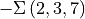
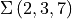
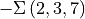
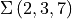
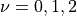
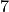

Example 5.5.1
In this notebook we will demonstrate an application of the regularized indefinite theta function formula for the computation of the  invariants of , with and without defects. We will compare these results with the invariants on the  and relevant
invariants of , with and without defects. We will compare these results with the invariants on the  and relevant  -series stemming from modularity. We will compare the invariants on the positive manifold with [2].
-series stemming from modularity. We will compare the invariants on the positive manifold with [2].
The invariants of the integer homology sphere is known to transform in the Weil representation identified by  . The -series making up this representation are
. The -series making up this representation are
[14]:
from pyPlumbing import Plumbing
import itertools
load("weil_rep_fncs.sage")
m = 42
K = [1,6,14,21]
for idxl,sgnl in zip(*weil_reps(m,K)):
print(f'theta_{m},{idxl[0]}', format_expansion(sum(round(sgn)*false_theta(m,idx,8) for idx,sgn in zip(idxl,sgnl))))
theta_42,1 2*q^0.005952380952380952*(1.0 + (-1.0)*q + (-1.0)*q^5 + 0.9999999999999999*q^10 + (-1.0)*q^11 + 0.9999999999999999*q^18 + Order(q^20))
theta_42,5 2*q^0.1488095238095238*(1.0 + 1.0*q^2 + 1.0*q^3 + 1.0*q^8 + (-0.9999999999999999)*q^13 + Order(q^20))
theta_42,11 2*q^0.7202380952380952*(1.0 + 1.0*q + 1.0*q^3 + 1.0*q^5 + (-1.0)*q^16 + Order(q^20))
We compare these with the invariants computed from plumbing.
[15]:
P = Plumbing.from_Brieskorn([2,3,7])
b = P.trivial_spin_c(["A",1])
for w in [0,1,2]:
zhat = P.zhat(["A",1],b,20,wilson=[vector([0])]*5+[vector([w])])
print(zhat)
q^(1/2)(4 - 4q^(1) - 4q^(5) + 4q^(10) - 4q^(11) + 4q^(18) + 4q^(30) - 4q^(41) + O(q^42))
q^(3/4)(4 - 4q^(2) - 4q^(3) - 4q^(8) + 4q^(13) + 4q^(22) + 4q^(25) + O(q^26))
q^(3/2)(4 - 4q^(1) - 4q^(3) - 4q^(5) + 4q^(16) + 4q^(20) + 4q^(26) + 4q^(31) - 4q^(53) - 4q^(60) + O(q^70))
The invariant of the orientation reversed manifold is expected to match the order 7 mock theta functions of Ramanujan up to an overall coefficient and a -power
[16]:
print("F0(q)=",F0(20).series(q,20))
print("F1(q)=",F1(20).series(q,20))
print("F2(q)=",F2(20).series(q,20))
F0(q)= 1 + 1*q + 1*q^3 + 1*q^4 + 1*q^5 + 2*q^7 + 1*q^8 + 2*q^9 + 1*q^10 + 2*q^11 + 1*q^12 + 3*q^13 + 2*q^14 + 3*q^15 + 3*q^16 + 3*q^17 + 2*q^18 + 5*q^19 + Order(q^20)
F1(q)= 1 + 1*q + 1*q^2 + 1*q^3 + 2*q^4 + 1*q^5 + 2*q^6 + 2*q^7 + 2*q^8 + 3*q^9 + 3*q^10 + 2*q^11 + 4*q^12 + 4*q^13 + 4*q^14 + 4*q^15 + 6*q^16 + 5*q^17 + 6*q^18 + 6*q^19 + Order(q^20)
F2(q)= 1 + 1*q + 2*q^2 + 1*q^3 + 2*q^4 + 2*q^5 + 3*q^6 + 2*q^7 + 3*q^8 + 3*q^9 + 4*q^10 + 4*q^11 + 5*q^12 + 4*q^13 + 6*q^14 + 5*q^15 + 7*q^16 + 7*q^17 + 8*q^18 + 8*q^19 + Order(q^20)
Following Conjecture 5, with defects in heighest weight representations  on the last node of the leg corresponding to , we get
[17]:
p = [2,3,7]
r = 1
x = 3
chi = 1
print("Z(-Sigma(2,3,7),nu=0)=",zhat_indefinte_theta(p,x,r,chi, n_max=20,nu=[0,0,0]))
print("Z(-Sigma(2,3,7),nu=1)=",zhat_indefinte_theta(p,x,r,chi, n_max=20,nu=[0,0,1]))
print("Z(-Sigma(2,3,7),nu=2)=",zhat_indefinte_theta(p,x,r,chi, n_max=20,nu=[0,0,2]))
Z(-Sigma(2,3,7),nu=0)= ((-2) + (-2)*q + (-2)*q^3 + (-2)*q^4 + (-2)*q^5 + (-4)*q^7 + (-2)*q^8 + (-4)*q^9 + (-2)*q^10 + (-4)*q^11 + (-2)*q^12 + (-6)*q^13 + (-4)*q^14 + (-6)*q^15 + (-6)*q^16 + (-6)*q^17 + (-4)*q^18 + (-10)*q^19 + Order(q^20))/q^(1/168)
Z(-Sigma(2,3,7),nu=1)= q^(143/168)*((-2) + (-2)*q + (-2)*q^2 + (-4)*q^3 + (-2)*q^4 + (-4)*q^5 + (-4)*q^6 + (-4)*q^7 + (-6)*q^8 + (-6)*q^9 + (-4)*q^10 + (-8)*q^11 + (-8)*q^12 + (-8)*q^13 + (-8)*q^14 + (-12)*q^15 + (-10)*q^16 + (-12)*q^17 + (-12)*q^18 + (-14)*q^19 + Order(q^20))
Z(-Sigma(2,3,7),nu=2)= q^(47/168)*((-2) + (-2)*q + (-4)*q^2 + (-2)*q^3 + (-4)*q^4 + (-4)*q^5 + (-6)*q^6 + (-4)*q^7 + (-6)*q^8 + (-6)*q^9 + (-8)*q^10 + (-8)*q^11 + (-10)*q^12 + (-8)*q^13 + (-12)*q^14 + (-10)*q^15 + (-14)*q^16 + (-14)*q^17 + (-16)*q^18 + (-16)*q^19 + Order(q^20))